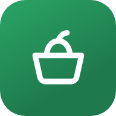

‹ Terug naar de appPrivacy
Aanbiedingskeuken · bijgewerkt op 29 september 2026
De Aanbiedingskeuken is gemaakt om te helpen met koken en boodschappen doen. Je hebt geen account nodig. We verzamelen zo min mogelijk gegevens, tonen geen advertenties en volgen je niet.
Wat alleen op je eigen telefoon staat
Deze gegevens blijven in de app op je toestel en worden nergens naartoe gestuurd:
- je gezin: het aantal volwassenen en kinderen, en de naam, geboortedatum en voedingsregels van een baby;
- allergieën, voorkeuren, favorieten en weggelaten ingrediënten;
- je spaarkaarten en klantenkaartnummers;
- je boodschappenlijst, zolang je die niet deelt;
- je etenstijd en keuze voor de herinnering. Het agendabestand wordt op je telefoon gemaakt.
Gebruik je de app binnen claude.ai terwijl je ingelogd bent, dan bewaart claude.ai je boodschappenlijst, favorieten, allergieën, voorkeuren, gezin en kaarten bij je account, zodat je ze op al je apparaten hebt. Alleen jij kunt die zien.
Wat je deelt met anderen
Voor de tijdlijn en de gedeelde boodschappenlijst gebruiken we Supabase, met servers in Europa. De app maakt daar een anonieme gebruiker aan. Er is geen e-mailadres of wachtwoord nodig.
- Tijdlijn: je schermnaam en de recepten, foto's en hartjes die je plaatst, zijn voor alle gebruikers te zien. Deel daarom geen persoonlijke gegevens of foto's van mensen. Je kunt je eigen recepten altijd zelf verwijderen.
- Meldingen: als je een bericht meldt, bewaren we welk bericht het is, de reden en je anonieme gebruikers-ID. Een bericht met 3 meldingen wordt verborgen. Wie je blokkeert, wordt alleen op je eigen telefoon bewaard.
- Gedeelde boodschappenlijst: de producten, aantallen en prijzen op een gedeelde lijst ziet iedereen die de code van die lijst heeft. Stop je met delen, dan houd je zelf een kopie en blijft de lijst bestaan voor de anderen.
Andere diensten die de app gebruikt
- GitHub Pages levert de app en de aanbiedingen. De app haalt de aanbiedingen op van onze eigen site, niet rechtstreeks bij de winkels.
- Google Fonts levert de lettertypen. jsDelivr en cdnjs leveren onderdelen voor de tijdlijn en de streepjescodes.
Deze diensten zien, zoals bij elke website, je IP-adres wanneer je telefoon iets bij hen ophaalt. Wij krijgen die gegevens niet.
Anonieme gebruiksstatistieken
Om de app beter te maken, houdt de telefoonversie bij welke onderdelen en recepten gebruikt worden. Bijvoorbeeld: een recept is bekeken, op de boodschappenlijst gezet of in de kookstand gekookt, of er is gezocht op "pompoen". Die gegevens gaan naar onze eigen database bij Supabase (Europa).
- Je telefoon krijgt daarvoor een willekeurige code. Daar staat geen naam, e-mailadres of telefoonnummer bij.
- Wat je zelf typt (namen, notities, boodschappen, kaartnummers) wordt nooit verstuurd. Alleen de naam van een bekend product, zoals "Melk", kan meegaan.
- Niemand anders kan de gegevens inzien, en wij bekijken alleen totalen.
- Wil je dit niet? Zet het uit onder Meer → Anonieme statistieken. Dan wordt er niets meer verstuurd.
Je gegevens wissen
Met deze knop wis je alles wat de app op deze telefoon heeft bewaard, zoals je lijst, gezin, kaarten en instellingen. Recepten die je op de tijdlijn hebt geplaatst, verwijder je eerst zelf in de app.
Alles is gewist.
Vragen
Wil je weten welke gegevens er over jou bij Supabase staan, of wil je die laten verwijderen? Neem contact op via github.com/sachasteenhorst. Je hebt daar recht op volgens de AVG.
Kort samengevat
- Geen account en geen advertenties. Alleen anonieme gebruiksstatistieken, die je onder Meer uitzet.
- Gezin, allergieën, kaarten en je eigen lijst blijven op je telefoon.
- Wat je op de tijdlijn zet, is voor iedereen te zien.